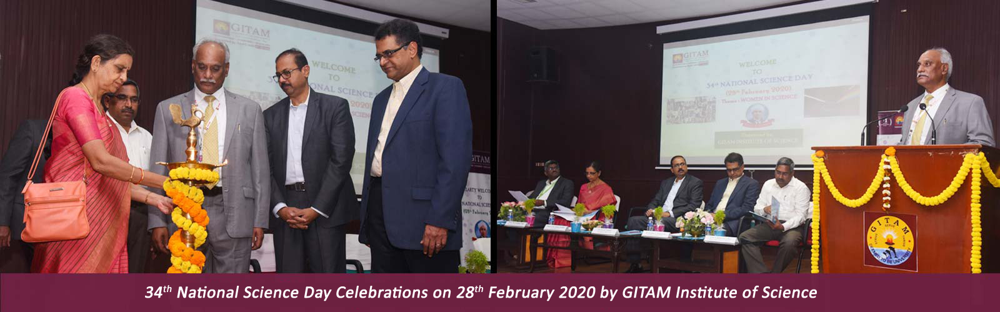
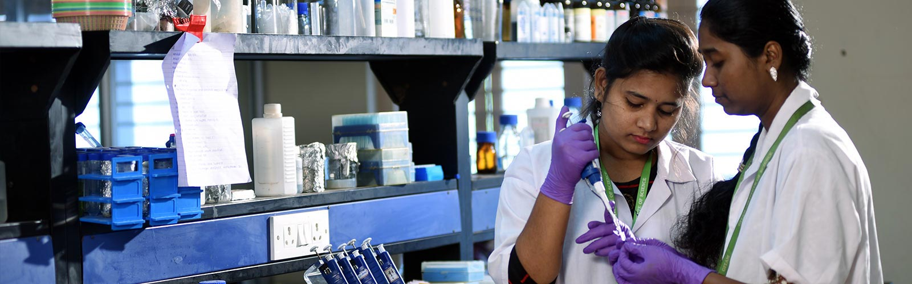
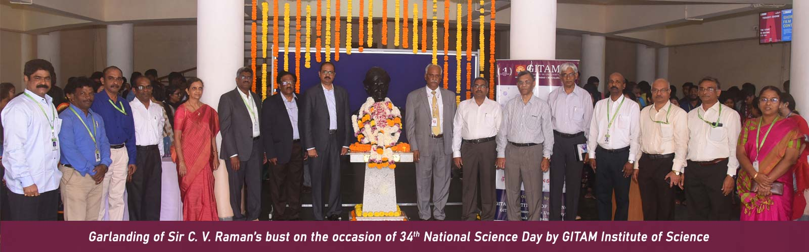
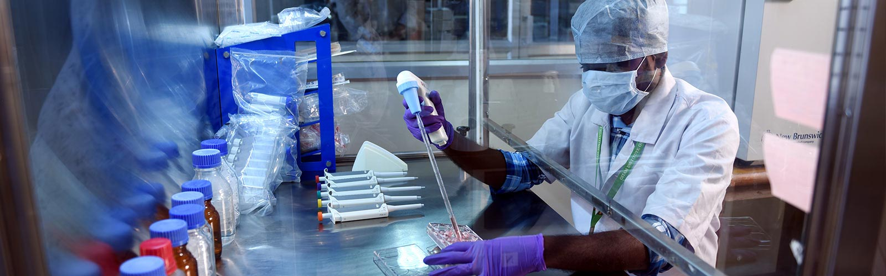

- Home
- Departments
-
Programs
Undergraduate Programs Postgraduate Programs
- Gallary
- Videos
- Contact Us
- Follow us on:
- Login
- Apply Now

ABOUT
GITAM Institute of Science was established with the main emphasis on education and research in the basic and emerging areas of Science. The saga of science programmes has started in GITAM beginning with UGC funded innovative course, M.Sc. Environmental Studies in 1995 and the latest addition being M.Sc. Food Science and Technology in 2008. The Institute takes pride in offering two programmes “ Five Year Int. M.Sc. Chemistry and B.Sc. (Hons) Chemistry sponsored by the pharma giants such as Laurus Labs and Dr.Reddy’s Labs. All the science departments have well developed laboratories. GITAM Institute of Science offers a diversified learning experience characterized by strong faculty-student interaction with a perfect blend of structure and flexibility that allows students to develop personally and professionally in an enriching and collaborative environment. The curriculum is regularly revised to suit the requirements of research organizations and industry. Experienced members of academia and industry are involved in the design and development of curriculum. Choice Based Credit System (CBCS) has been introduced to enhance student centric education to provide a flexible academic structure. The institute also offers research programmes and currently, more than 335 students are pursuing M.Phil/PhD. GIS focuses on research as one of its core strength. One of the important aims of the Institute is to translate the benefits of fundamental research into applied science through translational research. Emphasis on research has been yielding results. The faculty has completed twenty seven research projects and forty nine ongoing projects are in progress funded by UGC, DST, DAE, DBT, MoEF, ICMR, DRDO etc. Faculty have excellent training in advanced research laboratories in USA, France, Israel, Germany, Japan, South Africa, Taiwan, Portugal etc. The Institute has research partnered with prestigious national organizations like Bhabha Atomic Research Centre (BARC), Indian Institute of Chemical Technology, ICRISAT and International Universities like State University of New York at Binghamton (SUNY-B) and University of Glasgow to facilitate student and faculty exchange programmes.
Reputed companies from diversified industries visit the Institute for campus recruitment. Students are well trained in soft skills and personality development.© Designed By: Ujjwal kumar | MCA | 122022501028